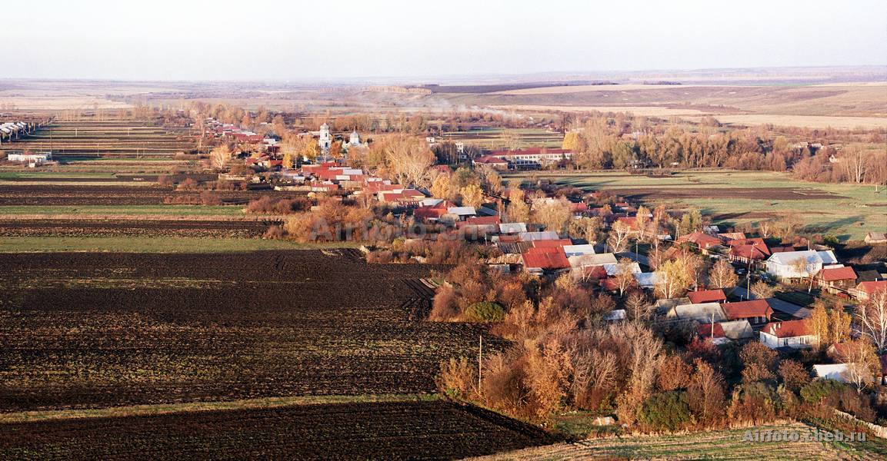

Природа моей Родины

Моя Родина - это Россия, моя малая родина это Чувашия и село Мишуково, здесь я вырос и провёл всё своё детство
Природа моей Родины удивительна и прекрасна, будь это летние закаты, или зимние восходы
Моя Родина - это Россия, моя малая родина это Чувашия и село Мишуково, здесь я вырос и провёл всё своё детство
Природа моей Родины удивительна и прекрасна, будь это летние закаты, или зимние восходы